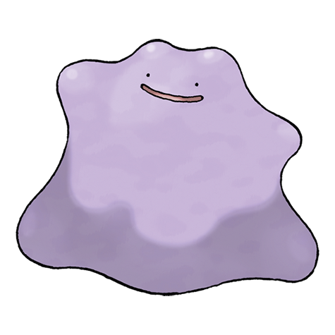

Cela fait de nombreuses années maintenant que l'on entend parler "d'élevage stratégique" dans pokémon. Mais qu'est-ce que c'est au juste ? L'élevage stratégique peut sembler complexe et plutôt rebutant au premier regard. Pourtant, avec un peu de pratiques et de bonnes informations, cela peu rapidement devenir simple d'obtenir le pokémon souhaiter.
Si l'on veut jouer plus sérieusement à pokémon et commencer à participer à des compétions, il est obligatoires d'avoir une équipe stratégique, sans quoi, l'on ira pas bien loin dans un tournoi. Nous allons voir ici comment avoir un pokémon stratégique en passant par toutes les étapes de sa création. Mon choix va se porter vers Métaloss, car il fait partie du tier over used en stratégie (l'un des tier le plus utilisé) et, car il est disponible sur les deux dernières versions de pokémon sorties à l'heure où j'écris cet article.
Afin de bien commencer, il est important de connaître les IV de ses pokémons. Il faut donc obtenir la fonction "juge" dans le jeu. Cette fonction s'obtient après la ligue. Les IV sont des statistiques cachées comprises entre 0 et 31. Ces valeurs sont attribuées à chaque statistique du pokémon (pv, attaque, deffense, ect.). Plus la valeur est élevé, plus cela améliorera la statistique.
Pour transmettre les IV, il sera très utile d'utiliser l'objet "noeud destin". Cet objet permet en effet transmettre 5 iv des parents au lieu de 3 en temps normal. Cela nous permettra de transmettre plus rapidement les IV. Cet objet s'obtient assez facilement dans les jeux.
| statistique | Valeur | |
|---|---|---|
| Pas top | 0 | |
| Passable | 1 à 15 | |
| Bon | 16 à 25 | |
| Très bon | 26 à 29 | |
| Fantastique | 30 | |
| Exceptionnel | 31 | |
C'est variable d'une version à l'autre. Généralement, le jeu nous offre au moins une possibilité de trouver des pokémon avec des IV meilleur. Nous pouvons par exemple citer les antres dynamax dans épée et bouclier ou le pokéradar dans diamant étincelant et perle scintillante.
Chaque Pokémon, possède une nature. La nature est trouvable dans le résumé du Pokémon et influence les statistiques du pokémon. Il en existe en tout 25. Sur ces 25 nature, 20 augmente une statistique de 10% et en diminue une autre de 10%. Les 5 autres natures sont neutres et ne vont pas nous intéressant en stratégie, car elles n'apportent donc aucun bonus. Comme vous pouvez le constater, avec le bonus vient un malus. Nous allons faire en sorte que celui-ci ne nous handicape pas. Il n'est en effet pas nécessaire qu'un pokémon ait TOUTES ses statistiques au maximum, cela nous permet donc d'en sacrifier une pour le malus.
Certaines natures sont plus utilisées que d'autres. Par exemple vous verrez passez beaucoup de pokémon de nature Rigide. Pourquoi ? Car dans ce cas, on privilégie l'attaque à l'attaque spéciale.
Petit exemple d'un Métalosse à la nature rigide :
On va essayer de maximiser la statistique d'attaque du pokémon en ayant une IV à 31 en attaque, une nature rigide. Nous apprendrons donc à ce pokémon exclusivement des attaques physiques et aucune attaque spéciale.

Voici ci-dessous un résumé de toutes les natures :
| Nature | Stat augmentée | Stat diminuée |
|---|---|---|
| Solo | Attaque | Défense |
| Rigide | Attaque | Att spé |
| Mauvais | Attaque | Def spé |
| Brave | Attaque | Vitesse |
| Modeste | Att spé | Attaque |
| Doux | Att spé | Défense |
| Foufou | Att spé | Def spé |
| Discret | Att spé | Vitesse |
| Assuré | Défense | Attaque |
| Malin | Défense | Att spé |
| Lâche | Défense | Def spé |
| Relax | Défense | Vitesse |
| Calme | Def spé | Attaque |
| Gentil | Def spé | Défense |
| Prudent | Def spé | Att spé |
| Malpoli | Def spé | Vitesse |
| Timide | Vitesse | Attaque |
| Pressé | Vitesse | Défense |
| Jovial | Vitesse | Att spé |
| Naïf | Vitesse | Def spé |
Toujours au sujet des natures, si l'on veut que notre pokémon ait une nature précise, c'est possible. Pour cela il faudra que l'un des "parent" en l'occurrence un métalosse ou un métamorphe ait la nature demandée. Si l'un des parents, le métalosse admettons, a une nature rigide, c'est parfait. Il lui suffira de lui faire tenir l'objet "pierre stase" avant de le mettre à la pension avec le métamorhphe. Eh oui, l'objet pierre stase ne sert pas qu'à éviter qu'un pokémon évolue, il sert également à transmettre les natures à des pokémons.
Pour transmettre les IV, il sera très utile d'utiliser l'objet "noeud destin". Cet objet permet en effet transmettre 5 iv des parents au lieu de 3 en temps normal. Cela nous permettra de transmettre plus rapidement les IV. Cet objet s'obtient assez facilement dans les jeux.
D'autres objets sont utiles. Ce sont les objets pouvoirs. Ils permettent de donner une IV spécifique s'ils sont tenus. Par exemple, dans notre cas, si le Métaloss à une IV d'attaque à 31 et qu'il tient un poignet pouvoir, son bébé aura forcément une IV d'attaque à 31.
Toujours au sujet des natures, si l'on veut que notre pokémon ait une nature précise, c'est possible. Pour cela il faudra que l'un des "parent" en l'occurrence un métalosse ou un métamorphe ait la nature demandée. Si l'un des parents, le métalosse admettons, a une nature rigide, c'est parfait. Il lui suffira de lui faire tenir l'objet "pierre stase" avant de le mettre à la pension avec le métamorhphe. Eh oui, l'objet pierre stase ne sert pas qu'à éviter qu'un pokémon évolue, il sert également à transmettre les natures à des pokémons.
Les ev ou effort value sont d'autres statistiques cachée (eh oui, encore me direz-vous). Elles ne sont pourtant pas à négliger. Un pokémon peut avoir 510 ev repartirent entre ses différentes stats. En gros, ces points amélioreront ses statistiques. Par exemple, pour notre Métaloss, on va d'office mettre la moitié de ces ev en attaque vu que c'est la statistique que nous voullons privillégier. Comme vous le voyez, il y a un certain nombre de choses qui peuvent augmenter ou baisser vos statistiques. En ce qui concerne les ev nous en parlerons plus en détails lorsque nous aborderons l'entrainement de notre pokémon stratégique.

Depuis tout à l'heure j'illustre avec un exemple concret. Nous allons donc continuer ici avec le même exemple. Nous visons un Métaloss stratégique, il serait de nature rigide avec 5IV à 31 en tout sauf attaque spéciale et une répartition d'ev a 252 en att, 180 spe et 76 en en pv. On va donc voir comment arriver à ce résultat.
Pour commencer, on va choisir le talent. Heureusement, ont vise ici le talent "corps sain" qui est le talent classique de Métaloss. Il existe en effet des talents trouvables facilement et des talents dit "caché". Dans ce cas de figure il faut souvent aller chercher le pokémon dans un autre endroit (comme, encore une fois, les antres dynamax en ce qui concerne pokémon épée et bouclier). Mais dans ce cas, nous prenons donc le talent "corps sain". Ici comme dans la nature "corps sains" est le seul talent de Terhal/Metang/Metaloss (notre pokémon et sa famille d'évolution) cela sera facile, notre bébé pokémon aura forcément ce talent.
Petite parenthèse sur les egg move. Les pokémons font tous partis d'un ou plusieurs groupe(s) d'oeuf. On peut donc faire se reproduire deux pokémons du même groupe d'oeuf (un baudrive et un fantominus entre eux par exemple). Cette technique peut permettre d'aller chercher des IV que notre pokémon de base n'aurait pas, mais cela peut aussi permettre d'apprendre des capacités à notre bébé pokémon qu'il n'aurait normalement pas pu apprendre. Dans notre cas, Métaloss n'a aucune capacité de ce genre et a de toute façon bien assez de capacité puissante. Nous ne devrons donc pas avoir recour à cette technique mais n'hésitez pas à vous renseigner sur le sujet si les egg move vous intéressent.
Nous avons déjà parlé de la nature. Vous savez donc qu'il faut que l'un des parents ait la nature souhaiter afin qu'il la transmette à notre bébé Terhal. Mettons donc que nous ayons un Métaloss rigide, nous allons lui faire tenir la pierre stase et nous allons le poser avec métamorphe dont nous allons voir les caractéristiques ci-dessous.
Nous souhaitons avoir un pokémon qui aura au totale 5IV à 31 et autant vous dire que vous n'en trouverez malheureusement pas dans la nature. Le but ici de trouver un métamorphe avec le plus d'IV possible (par le biais des antres dans pokémon Epée-Bouclier et par le pokéradar dans les remake de Diamant et Perle.) Nous allons partir du fait que vous êtes chanceux, vous avez réussi à trouver un métamorphe avec 4 IV ! Voici le profil de votre métamorphe :
PV 31/ATT X/ ATT spe X/ Deff 31/ Deff spé 31/ Vitesse 31
Comme vous pouvez le voir, c'est déjà très bien, mais il manque une IV essentielle : celle de l'attaque. Nous nous pencherons dessus juste après. À partir de ce moment, votre but sera de faire que votre bébé Terhal arrive exactement à ces statistiques en IV :
Rigide PV 31/ATT X/ ATT spe X/ Deff 31/ Deff spé 31/ Vitesse 31
Pour cela vous allez poser votre métamorphe avec l'objet "noeud destin" pour qu'il essaie de donner ces quatre IV à 31 à votre Terhal et vous allez donner l'objet pierre stase à votre Tehral pour qu'il donne sa nature à chaque fois. Ce processus est assez long et laborieux, il nécessite un grand nombre d'oeufs. À un moment, vous vous retrouverez peut-être avec un Terhal ayant déjà deux IV à 31. Parfait ! Changer votre premier Terhal à la pension contre le second et n'oubliez pas de toujours lui faire tenir la pierre stase ! Vous vous retrouverez donc avec à la pension ces pokémon :
PV 31/ATT X/ ATT spe X/ Deff 31/ Deff spé 31/ Vitesse 31
Et
PV X/ATT X/ ATT spe X/ Deff X/ Deff spé 31/ Vitesse 31
Continuer à faire des oeufs et à changer les Terhal jusqu'à ce que vous ayez le résultat voulu. Lorsque vous y parvenez, il va maintenant falloir trouver un pokémon ayant la fameuse IV en attaque qui vous manque. Cela peut être un Métamorphe, un pokémon de la famille d'évolution de Métaloss ou un pokémon de la famille d'oeuf du Métaloss, mais dans ce cas vous devez avoir un Terhal femelle et un autre pokémon mâle sinon c'est un oeuf de l'autre pokémon que vous aurez. Afin d'illustrer ceci et de vous apprendre à utiliser les familles d'oeufs avec sagesse, prenons donc le dernier cas. Métaloss fait partie de la famille d'oeuf dite "minérale". Nous allons donc voir dans nos boîtes si nous n'avons pas un pokémon de cette famille ayant une belle IV en attaque ou alors nous irons en capturer un. Prenons un autre pokémon disponible dans beaucoup de jeu : Onix. Nous avons donc réussi à mettre la main sur cet Onix mâle :

PV 31/ATT 31/ ATT spe X/ Deff X/ Deff spé X/ Vitesse X
Comme vous pouvez le voir, il n'a pas beaucoup d'IV, mais au moins il a celle que l'ont recherche. On va donc mettre cet Onix avec notre précédent Terhal. Onix aura comme objet noeud destin et Terhal aura la pierre stase, car ont cherche encore et toujours la nature rigide. Voici donc ce que nous aurons à la pension :
Femelle Rigide PV 31/ATT X/ ATT spe X/ Deff 31/ Deff spé 31/ Vitesse 31 Pierre Stase
Mâle PV 31/ATT 31/ ATT spe X/ Deff X/ Deff spé X/ Vitesse X Noeud destin
À force de faire des oeufs, vous devriez obtenir ce pokémon :
Rigide PV 31/ATT 31/ ATT spe X/ Deff 31/ Deff spé 31/ Vitesse 31 Pierre Stase
Si tel est le cas, félicitations ! Vous avez fait le plus gros du travail. Maintenant, ne reste plus qu'à passer à l'étape suivante : l'entrainement.
Il est désormais temps de parler des EV. Je les ai déjà évoqués plus haut. Nous devons donc, comme c'était notre objectif, augmenté les EV de notre petit Terhal (qui part de zéro). Nous allons donc monter son EV d'attaque à 252, celle de vitesse à 180 et 76 en pv. Comment faire ? Il y a plusieurs solutions. Vous pouvez sois le faire battre certain pokémon spécifique. Si vous gagner contre un Quenotor, vous gagnerez un EV en pv par exemple. Néanmoins, cela prendra beaucoup de temps. Une autre solution serait de donner des accélérateurs. Pour les pv on peut donner un objet pv plus pour lui faire gagner 10 EV d'un coup. Hélas cette méthode se révèle onéreuse. En effet, un seul accélérateur coûtera déjà 10 000 Pokédollars. Reste donc la troisième solution. Vous rappelez-vous du poignet pouvoir ? Il sert certes aussi à transmettre l'IV d'attaque à un bébé pokémon... mais pas que ! Si votre pokémon tient cet objet et bat un autre pokémon, il gagnera également 8 EV en une fois. Pour ce type d'entrainement, il vous faudra donc vous entrainer un certain temps avec le poignet pouvoir puis ensuite changer pour l'objet pouvoir qui augmente les EV de vitesse, c'est-à-dire la chaîne pouvoir et enfin s'entrainer un peu avec le poids pouvoir pour gagner des EV en pv. Ces objets sont toujours échangeables dans contre des points combats dans les jeux. Voici ici les trois objets pouvoir cité :

Comment savoir si vous avez mis toutes les EV ? Allez voir dans le résumé de votre Terhal, ou Métang s'il a déjà evolué, et regarder ses statistiques. Si une étoile apparait à côté c'est que les EV de cette stat sont au maximum. Si la couleur des stats devient bleu c'est que vous êtes arrivé au nombre maximal d'EV globale pour votre pokémon. Voici un exemple :
Bien, maintenant votre pokémon a toutes ses EV. Il ne reste plus qu'à le monté minimum au niveau 50 si ce n'est déjà fait. Cela sera plus simple pour les matchs en ligne et autre tour de combat.
Pour les attaques, étant donné qu'on a booster notre stat en d'attaque on va choisir des attaques physique et aucune attaque spéciale. Voici donc les quatre attaques que je vous recommande et pourquoi : piège de Roc, poing Météor, Séisme, poing éclair. Tout d'abord, piège de roc vous permettra de blesser le pokémon ennemis à chaque fois que celui-ci fera un changement. C'est très utilisé en stratégie. Ensuite, poing météor, une attaque acier pouvant encore augmenter votre attaque. Puis Séisme, une attaque sol très puissante qui vous permettra de faire de gros dégat contre les pokémon electrique entre autre et enfin, poing éclair afin d'éliminer les pokémon eau. Ces attaques vous offres une bonne couverture de type et reste dans la logique de la stratégie mise en place jusqu'alors.
Résumé des quatre attaques :
-Piège de roc
-Poing météor
-Séisme
-Poing éclair
Votre pokémon est presque prêt ! Plus qu'un dernier détail et pas des moindres : le choix de l'objet. Ce choix important vous permettra au choix de soigner un peu votre pokémon (reste, baie sitrus, baie prine), de faire des dégâts à l'ennemi (casque brut) ou de booster une de vos statistiques (bandeau choix) ou encore de booster un de vos types (encens vague, plaque ciel, charbon ect). Il existe une foule d'objets que peut tenir votre pokémon durant un combat. Pour notre Métaloss, je voudrais vous présenter une certaine catégorie d'objet : les objets choix. Ce type d'objet vous bloque sur une seule attaque, mais augmenter considérablement une statistique donnée (50% en plus). Nous allons choisir ici le bandeau choix. Celui-ci boostera notre attaque physique, poussant la puissance de notre Métaloss à son apogée. Avec ce set, vous aurez là un pokémon doté d'une puissance offensive impressionante.
Félicitations ! Vous avez désormais un Métaloss stratégique, près à en découdre avec vos adversaires. Faire son premier pokémon stratégique est toujours plus long, mais avec un peu de pratique, vous réussirez à gagner du temps. Je vous propose ici une petite synthèse de votre Métaloss :
Rigide PV 31/ATT 31/ ATT spe X/ Deff 31/ Deff spé 31/ Vitesse 31 Bandeau choix